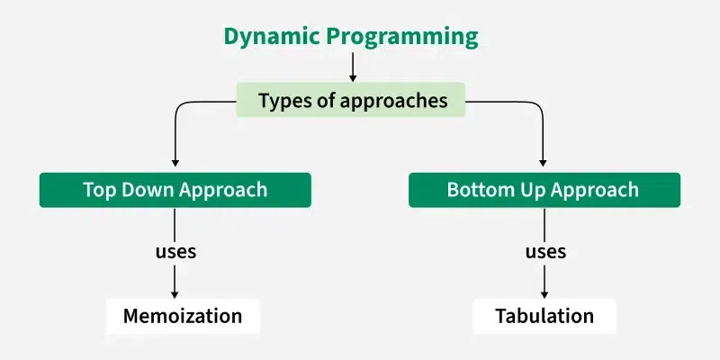

Dynamic Programming or DP
Dynamic Programming is an algorithmic technique with the following properties.
- It is mainly an optimization over plain recursion. Wherever we see a recursive solution that has repeated calls for the same inputs, we can optimize it using Dynamic Programming.
- The idea is to simply store the results of subproblems so that we do not have to re-compute them when needed later. This simple optimization typically reduces time complexities from exponential to polynomial.
- Some popular problems solved using Dynamic Programming are Fibonacci Numbers, Diff Utility (Longest Common Subsequence), Bellman–Ford Shortest Path, Floyd Warshall, Edit Distance and Matrix Chain Multiplication.
Dynamic Programming (DP) Introduction
Dynamic Programming is a commonly used algorithmic technique used to optimize recursive solutions when same subproblems are called again.
- The core idea behind DP is to store solutions to subproblems so that each is solved only once.
- To solve DP problems, we first write a recursive solution in a way that there are overlapping subproblems in the recursion tree (the recursive function is called with the same parameters multiple times)
- To make sure that a recursive value is computed only once (to improve time taken by algorithm), we store results of the recursive calls.
- There are two ways to store the results, one is top down (or memoization) and other is bottom up (or tabulation).
Dynamic programming is used for solving problems that consists of the following characteristics:
1. Optimal Substructure:
The property Optimal substructure means that we use the optimal results of subproblems to achieve the optimal result of the bigger problem.
Example:
Consider the problem of finding the minimum cost path in a weighted graph from a source node to a destination node. We can break this problem down into smaller subproblems:
- Find the minimum cost path from the source node to each intermediate node.
- Find the minimum cost path from each intermediate node to the destination node.
The solution to the larger problem (finding the minimum cost path from the source node to the destination node) can be constructed from the solutions to these smaller subproblems.
2. Overlapping Subproblems:
The same subproblems are solved repeatedly in different parts of the problem refer to Overlapping Subproblems Property in Dynamic Programming.
Example:
Consider the problem of computing the Fibonacci series. To compute the Fibonacci number at index n, we need to compute the Fibonacci numbers at indices n-1 and n-2. This means that the subproblem of computing the Fibonacci number at index n-2 is used twice (note that the call for n - 1 will make two calls, one for n-2 and other for n-3) in the solution to the larger problem of computing the Fibonacci number at index n.
Approaches of Dynamic Programming (DP)
Dynamic programming can be achieved using two approaches:
